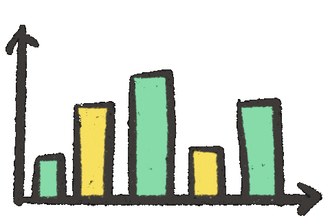
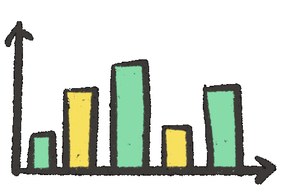
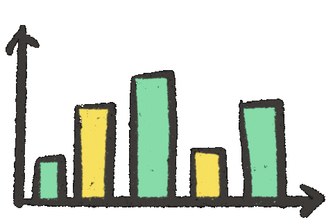
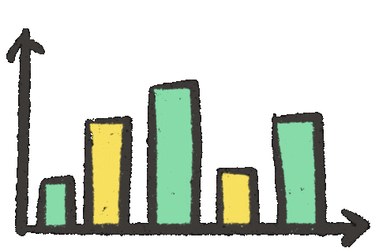

Hey
I'm Deepak
Data Analyst
Mechanical Engineer

 

Data Analyst
Mechanical Engineer
A data enthusiast with a Masters in Data Science and Analytics from the University of Leeds, UK. My journey in data science has empowered me with robust skills in data analysis, statistical modeling, and machine learning. I take pride in my proficiency with tools such as R, Python, and Tableau, and I'm always eager to leverage data for insightful decision-making.

Expertise in data analysis, statistical modeling, and machine learning. Proficient in harnessing data for informed decision-making and insights.

Hands-on experience with Python, R, and SQL, facilitating comprehensive data analysis and modeling. My proficiency extends to web development, with a solid grounding in HTML and CSS, and programming capabilities in C++, Java, and MATLAB. I leverage Tableau for insightful data visualization and am adept at utilizing Microsoft Excel for data analysis.

Specializing in the practical application of machine learning and deep learning models like MLP, CNN, and RNN, I leverage frameworks like PyTorch to develop innovative solutions for real-world challenges. My work in projects like Image Classification and Image Caption Generation exemplifies a blend of robust technical knowledge and pragmatic application in the evolving field of data science.
Familiarity with Microsoft Azure and its data fundamentals. Experience in deploying and managing data on cloud platforms.
Possessing robust problem-solving and critical thinking capabilities, I adeptly navigate through complex data challenges. My effective communication skills facilitate transparent and insightful data storytelling, while my collaborative spirit enhances team synergy and drives collective innovation.
As a capstone for the Google Data Analytics course, I analyzed the Cyclistic Bike Share dataset spanning from July 2021 to June 2022. The study aimed to discern the distinct usage patterns between casual riders and annual members. These insights are pivotal for Cyclistic's upcoming marketing strategy, aiming to transition casual riders into loyal annual members. Explore the detailed dataset and report on Kaggle for an in-depth view of the project. Additionally, visualize the data insights through the interactive Tableau story created as a part of the project analysis.
Developed MLP and CNN models in PyTorch for image classification. Implemented data augmentation, dropout, and hyperparameter tuning to counteract overfitting and enhance model robustness. Comprehensive testing was conducted, including loss analysis, confusion matrix evaluation, and accuracy assessment.
Employed machine learning methodologies in R to analyze crowdfunding data, aiming to predict the success of Initial Coin Offerings (ICOs). Techniques such as KNN, Neural Networks, and Adaptive Boosting were utilized, with the Neural Network model notably achieving an accuracy of 70%. This analysis offers invaluable insights for both fundraising teams and potential investors.
Designed and implemented an image-to-text model for generating descriptive captions from images. Employed a pre-trained ResNet50 model to extract meaningful features from the images and implemented a decoder network, incorporating recurrent neural networks (RNNs) to generate descriptive captions.
Conducted an extensive analysis of global precipitation patterns and extreme weather events, particularly cyclones, leveraging data from the Tropical Rainfall Measuring Mission (TRMM). Developed a multi-step algorithm capable of identifying and tracking cyclones with remarkable accuracy using rainfall and sea level pressure data. Explore the detailed methodology and findings in the Kaggle notebook.
Designed and implemented a streamlined data engineering pipeline by configuring Azure Data Factory, Data Lake Gen 2, Synapse Analytics, and Azure Databricks for end-to-end data processing. Successfully ingested and transformed Olympic data from various sources for analysis.
Embarking on a new data-driven journey or need insights from your existing data? Let's explore the possibilities together. Your ideas and challenges are welcomed here, and I'm excited to collaborate and create something impactful with you. Reach out and let’s turn data into action.


© 2022 Deepak Bisht.